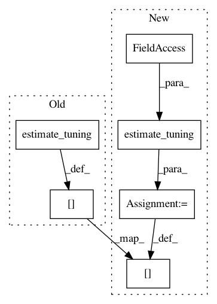

b7c2f6e9ccd65a53d8ae9aa0d3ee287ce9c93019,librosa/feature.py,,logfsgram,#,10
Before Change
del magnitudes
bins_per_octave = kwargs.get("bins_per_octave", 12)
kwargs["tuning"] = estimate_tuning(pitches, bins_per_octave=bins_per_octave)
del pitches
else:
After Change
// If we don"t have tuning already, grab it from S
if "tuning" not in kwargs:
kwargs["tuning"] = estimate_tuning(S=S,
sr=sr,
bins_per_octave=kwargs.get("bins_per_octave", 12))
// Build the CQ basis
cq_basis = librosa.filters.logfrequency(sr, n_fft=n_fft, **kwargs)
In pattern: SUPERPATTERN
Frequency: 3
Non-data size: 6
Instances
Project Name: librosa/librosa
Commit Name: b7c2f6e9ccd65a53d8ae9aa0d3ee287ce9c93019
Time: 2014-02-07
Author: brm2132@columbia.edu
File Name: librosa/feature.py
Class Name:
Method Name: logfsgram
Project Name: librosa/librosa
Commit Name: 66390be905e2ea01d70917453abbae8bac555ec2
Time: 2014-06-25
Author: brm2132@columbia.edu
File Name: librosa/feature.py
Class Name:
Method Name: logfsgram
Project Name: librosa/librosa
Commit Name: b7c2f6e9ccd65a53d8ae9aa0d3ee287ce9c93019
Time: 2014-02-07
Author: brm2132@columbia.edu
File Name: librosa/feature.py
Class Name:
Method Name: chromagram